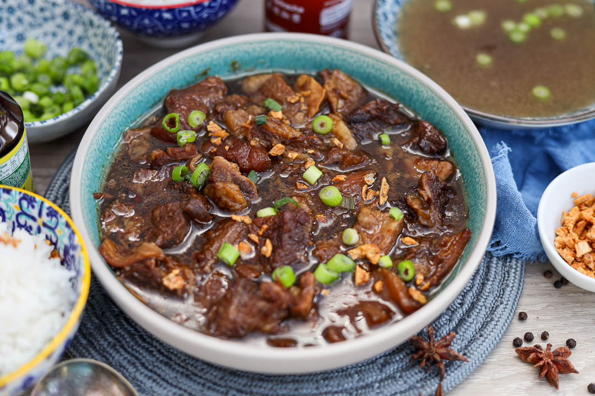

Home
Pares

Description
Pares, also known as beef pares, is a term for a serving of Filipino braised beef stew with garlic fried rice, and a bowl of clear soup. It is a popular meal particularly associated with specialty roadside diner-style establishments known as paresan. Source: Google Search
Personal Note: This a personal recipe rendition by the Filipino learner who created this webpage. It is the result of years of cooking pares at home for his small family. His passion for cooking was passed down by his mother, who cooked not just for survival, but to ensure that every meal was delicious and enticing. She poured love into everything she made, and that is the secret recipe.
Servings: Yields 2 to 3 servings (ideal for a family of 6 when paired with rice and side dishes).
Ingredients
- 500g Beef brisket or flank
- 4 cups Water (plus 1/4 cup for cornstarch slurry)
- 1 tsp Whole black peppercorns
- 2 pieces Dried bay leaves
- 2 tbsp Unsalted butter or margarine
- 2 pieces Whole star anise
- 1-inch piece Ginger, sliced into thick flat discs
- 1/4 cup Soy sauce
- 2 tbsp Oyster sauce
- 1 piece Knorr Beef cube
- 3 tbsp Brown sugar
- 1 tbsp Cornstarch
- 1/2 tsp Salt (or to taste)
Steps
Preparation
- Dice the beef into uniform 2-inch squares.
- Slice the ginger into large, flat discs.
- Measure and portion all remaining ingredients before cooking.
Cooking
- Simmer the beef with peppercorns and bay leaves in water until tender, then strain and reserve the beef broth.
- Sauté the ginger and star anise in butter or margarine briefly, then add the tenderized beef to brown slightly.
- Pour in the reserved broth until the pot is half-full and let it boil for a few minutes.
- Skim the liquid and discard the ginger pieces and star anise.
- Season the broth by stirring in the soy sauce, oyster sauce, and beef cube.
- Whisk the cornstarch into 1/4 cup of water to create a slurry, then stir it into the pot to thicken the sauce.
- Adjust the flavor profile with brown sugar and salt to balance the saltiness of the soy sauce.
Serving Suggestions
- Ladle hot into a bowl with a generous amount of broth.
- Top with crisp fried garlic and a drizzle of chili oil.
- Serve alongside ice-cold soft drinks or your choice of cold beverage.